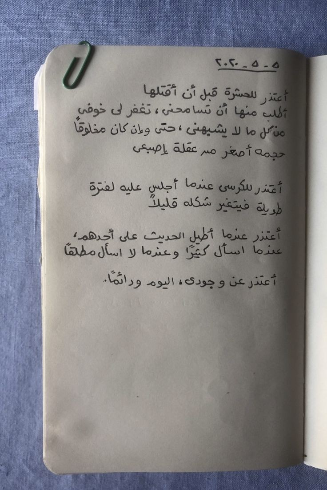

Draft translation: please check it with a native speaker before release.
このページは OCR デモの一部です。ステータス：段階 2、まだ作られていません。
手書きは印刷よりも読み取りが難しいです。丁寧に書かれた行は、後から一行ずつ読めるようになる予定です。取り消し線のある手書きのページ全体は、まだ読み取れず、MVP も試みません。
手書きの行が読み取られるとき、取り消された語は通常の文字ではなく取り消された状態のまま保持されます。これは計画されていますが、まだ作られていません。

パブリックドメインのデータセットからの手書きのアラビア語のページ。文字は見えますが、手書きはまだ読み取られません。後の段階です。
修正のある手書きの英語の手紙。NoteCraft の書き込みモードでインクがどう働くかを示しています。手書きはまだ読み取られません。